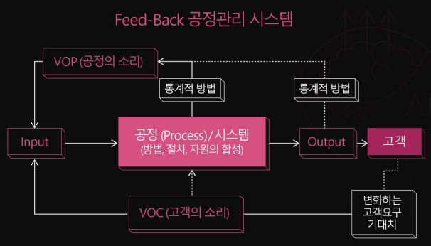
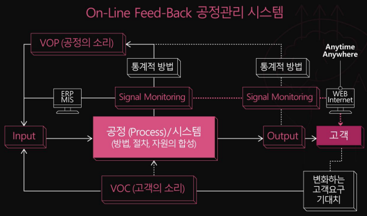
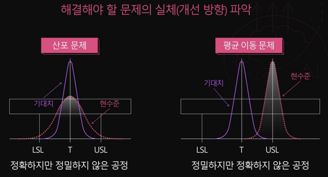
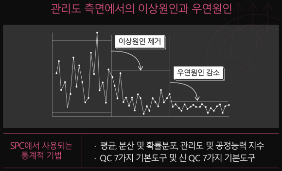
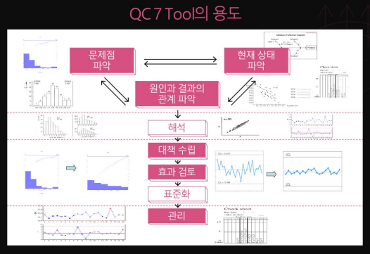
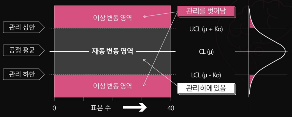
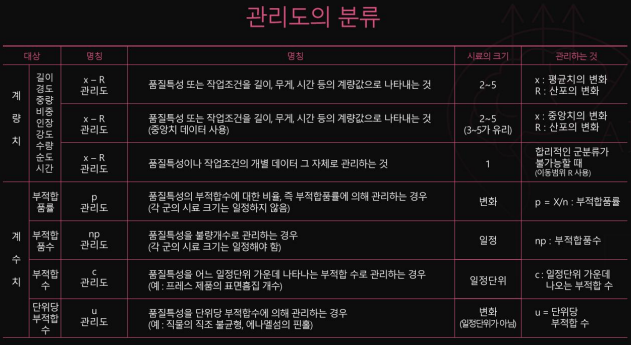

해당 글은 LG에서 지원하는 LG Aimers의 교육 내용을 정리한 것으로,
모든 출처는 https://www.lgaimers.ai/입니다.
SPC
Feed-Back 공정관리 시스템


SPC
Statical Process Control
공정에서 요구되는 품질이나 생산성 목표를 달성하기 위해 통계적 방법으로 공정을 효율적으로 운영해 나가는 관리 방법
장점: 결함 방지, 불필요한 공정 방지
단점: 데이터의 정확한 수집 필요, 관리도에 대한 올바른 분석과 조치 필요
SPC의 적: 품질변동
우연원인: 생산 조건이 엄격히 관리된 상태에서도 불가피한 품질변동
이상원인: 산발적으로 발생하여 품질변동을 발생시키는 원인


품질개선도구
Qc 7가지 도구: 적은 데이터로부터 가능한 한 신뢰성이 높은 객관적인 정보를 얻는 데 가장 유효한 수단

파레토 차트: 데이터를 몇 개의 범주에 의해 구분해 문제의 원인을 파악
특성요인도:문제의 결과가 어떤 원인으로 일어나는지 그 원인 관계를 살펴보고 도식화해서 문제를 파악
체크시트: 부적합 개수, 결점 수 같은 셀 수 있는 자료를 수집
히스토그램: 데이터가 존재하는 범위를 구간으로 나누어 각 구간에 포함되는 데이터의 도수 표를 작성해 분포 상태 파악
산점도: 여러 변수 간의 관계를 그림으로 나타낸 것
그래프: 데이터를 도형으로 나타내어 수량의 크기를 비교하거나 수량의 변화 형태를 알기 쉽게 나타낸 것
관리도:

